Brannstasjonen i Halden sentrum
Innledning
«Du skulle ha kaktus under armene.» «Da visste du at du var brannmann.» «Og ingenting skulle stoppe deg.» Jens Lindstrøm, tidligere brannsjef i Halden.
Sentrum
Brannstasjonen i Halden sentrum
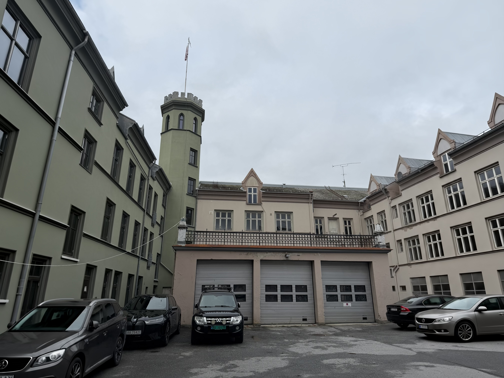
Foto kommer
Brannstasjonen lå midt i Halden sentrum. Den hadde slangetårn og krakker utenfor døra.
Jens, tidligere brannsjef i Halden, vokste opp hundre meter fra stasjonen. «Alle små gutter ville bli brannmann», sier han. «Jeg vokste aldri fra det». Han startet som reservebrannmann i 1977 og ble senere fast ansatt i 1980.
Siden 1911, da stasjonen i byen ble grunnlagt og Halden brannvesen oppstod, hadde den vært der. Før den tid hadde brannberedskapen tilhørt soldatene på festningen.
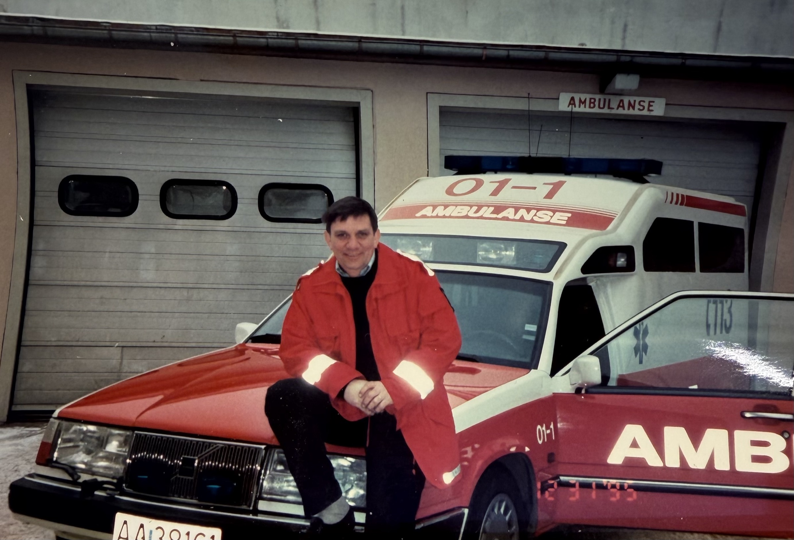
Foto kommer
Vakt
Byens nervesenter
De var åtte mann på vakt da Jens begynte, og jobben var mye mer enn bare å slokke branner. Stasjonen var som byens nervesenter. Det var telefonvakt som tok imot alarmer med egen 110-sentral. Alarmene fra hjemmesykepleien, overvåking av strømnettet og varsler om lekkasjer på vannverket kom alle inn hit. Også legevakta ringte til stasjonen. Og fysiske brannmeldere stod rundt i byen som meldte rett inn til vaktrommet.
De hadde i tillegg ambulansen. Og den gikk fra rundt 800 oppdrag i året (1980) til nesten 2400 (midten av 90-tallet). Jens kjørte ambulansen i nesten 15 år og sier det er de beste årene i sitt arbeidsliv. «Man kjente folk, og man kjente jentene i mottaket på sykehuset. Det ble en gjeng», forteller han.
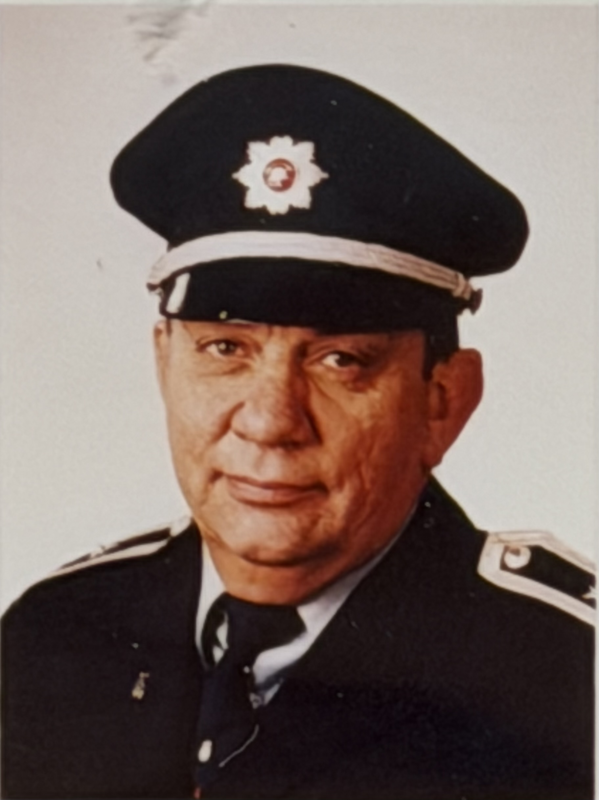
Foto kommer
Utstyr
Andre tider
Utstyret var helt annerledes enn i dag. Jens fikk som reservebrannmann gummistøvler, regnbukse og regnjakke. Faste ansatte fikk ulljakker, men også regnbukser. Regnbuksene ble værende lenge.
«Tommy-hjelmen», hjelmen med hanekam, ble brukt til ca. 1992. De vasket uniformen sin én gang i året. Og de gikk rett til spisesalen etter store branner. Med klærne fulle av røyk.
Når det var mindre å gjøre, fant de noe annet å bruke tiden på. De hadde jo stigebil, så de kunne vaske vinduene på rådhuset, de feide fortau og gikk kveldsrunde som vaktmester. «Vi kunne like godt gjøre noe i stedet for å sitte med hendene i fanget», sier Jens.
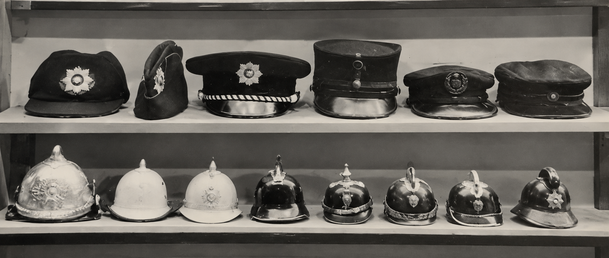
Foto kommer
Alvor
Byens helter
Men det var også et stort alvor i jobben som de alltid hadde med seg. Seks måneder etter Jens ble fast ansatt var det den første dødsulykken og eneste hittil. En av Haldens brannmenn falt 15 meter i lasterommet på en båt ved brygga under en brann. En påminnelse om at de virkelig setter sine egne liv i fare for andre.
Flytting
Endring over tid
I sentrum levde brannstasjonen på lånt tid. Rundt fem prosjekter for å bygge nytt bidro Jens til, men ingen av forsøkene ble noe av. De manglet både penger og vilje. Stadig konflikt mellom enkeltpolitikere og tillitsvalgte sto i veien. Jens sier at for politikerne ble brannvesenet «hår i suppa». De ville ikke bruke ressurser på dem.
-
Tomtene som ble vurdert: Tistedal-området, det gamle meieriet, en gammel «jungle-fabrikk» ved elva og Noak-bygningen.
-
Hindringen: Lite politisk vilje og konflikt mellom enkeltpolitikere og de tillitsvalgte.
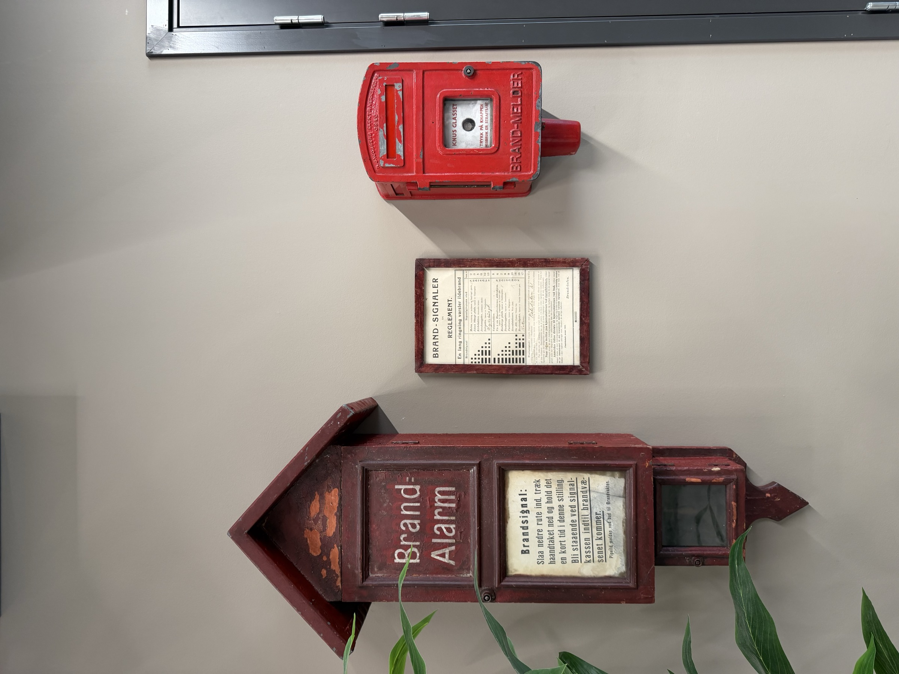
Foto kommer
Organisering
Jobbene forsvinner
Ambulansetjenesten forsvinner på midten av 90-tallet. Den ble overført til sykehuset, og på stasjonen gikk vaktlaget fra åtte til fem. Og da forsvant også telefonvakten. Og 110-sentralen ble flyttet ut av byen, til Moss og senere til Ski. Da mistet brannstasjonen sin rolle som byens nervesenter.
- Vaktlaget
- Fra åtte til fem mann.
- Telefonvakta
- Borte, sammen med mye av den gamle «altmuligfunksjonen» som overvåkingen.
- 110-sentralen
- Flyttet først til Moss, siden til Ski.
«Hvis vi trykket på den store knappen, fikk vi egentlig like stort brannvesen som Oslo», sier Jens.
Grensen
På tvers av grenser
Nå måtte de finne andre veier. Gjennom et prosjekt med Strømstad og Tanum startet de et samarbeid som krysset grensene. Jens fortsatte og bygget avtaler videre med Sarpsborg, Rakkestad og Aremark.
Andreas Stenmark Berger sier at i dag hjelper stasjonene hverandre uten å sende regning de første to timene.
Avtalene holdt liv i stasjonen i Halden og uten dem hang stasjonens overlevelse i en tynn tråd. I Sarpsborg ble Jens innkalt til rådmannen som ville si opp avtalen. Jens mente det var på grunn av frykt for tapt overtid. Men to dager før møtet, hell i uhell, så slukker Haldens mannskap en skogbrann på Sarpsborgs område, da Sarpsborgs egne var opptatt. Slik overlevde avtalen deres.
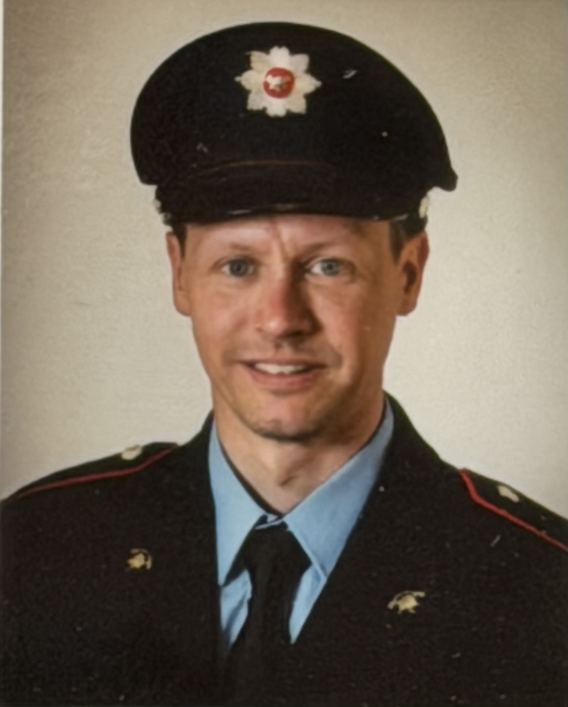
Foto kommer
Vestgård
Stasjonen må stenges
Arbeidstilsynet kom til slutt og tok saken. De stengte den gamle stasjonen. Da måtte Haldens brannvesen til et midlertidig lokale på Vestgård. Gjennom mange forsøk over flere tiår hadde det fortsatt ikke blitt noe av en ny stasjon.
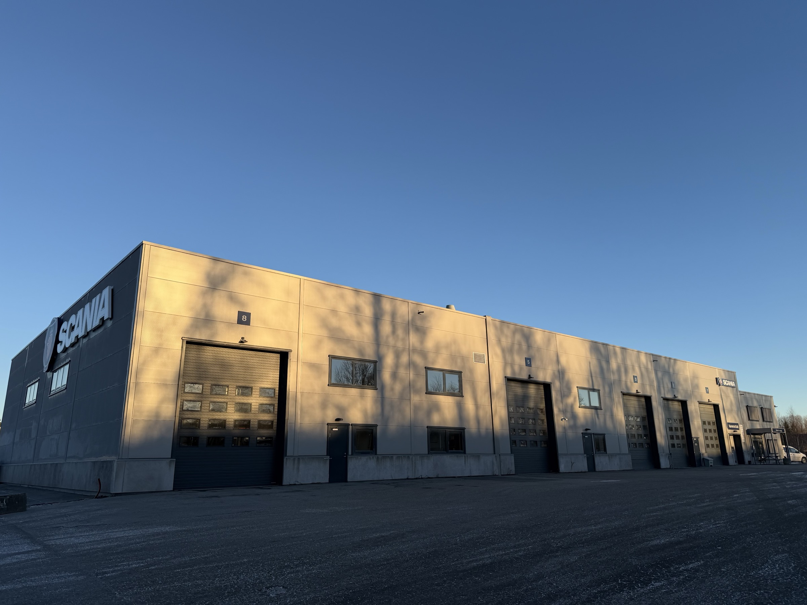
Foto kommer
Andreas har jobbet i Halden brannvesen siden 2004 og husker ventetiden godt. «Man tryller jo ikke opp en brannstasjon», sier han. De visste at Vestgård var midlertidig og det ga en følelse av å vente på noe bedre. Underveis ble bemanningen kuttet ned til fire mann av økonomiske årsaker. I dag er de fem på hvert vaktlag.
Steder
Hvor stasjonen har stått
Kartet viser hvor brannstasjonene i Halden har vært plassert gjennom historien. Trykk på markørene for å utforske de ulike plasseringene og få mer informasjon om hver enkelt stasjon.
Før og etter
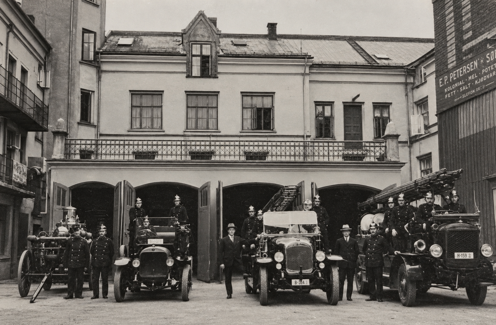
Tidligere bygg
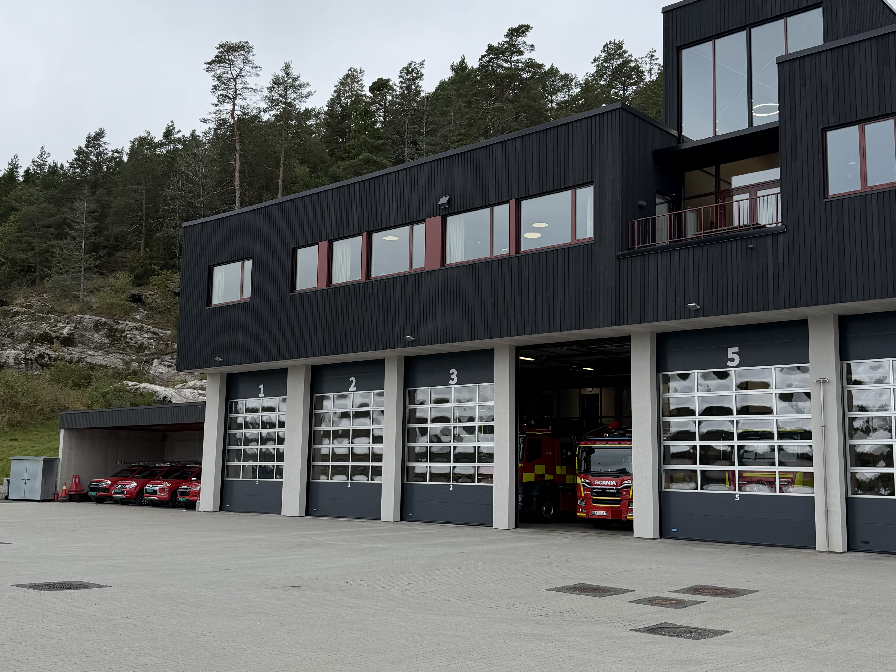
Senere bygg
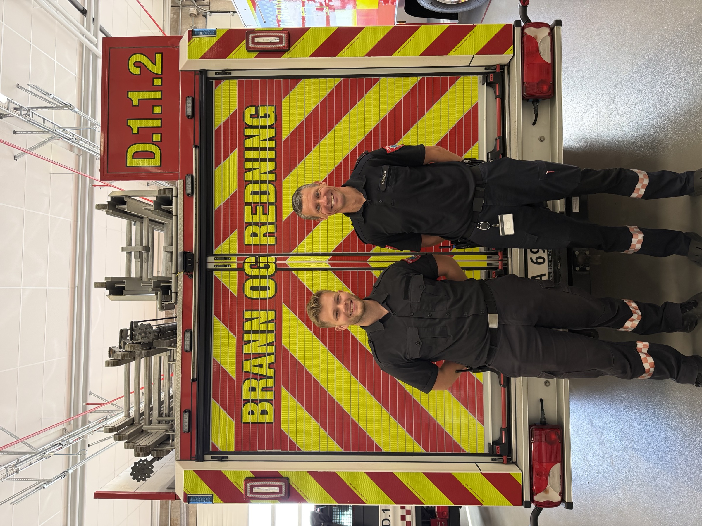
Foto kommer
I dag
Brannstasjonen i dag
Mellom E6 og byen
I dag ligger den nye stasjonen på Remmen rett ved Høgskolen i Østfold. Denne plasseringen gir bedre responstid enn både sentrum og Vestgård. Mange hendelser trekker dem stadig mot E6, så Andreas mener de ligger veldig fint til.
Fra gammel stasjon til ren sone
Ifølge Andreas har arbeidsmiljøet blitt et helt annet i dag.
«Vi har et bygg vi bryr oss om. Det er moderne, og vi blir tatt vare på på en helt annen måte.»
Stasjonen skiller mellom skitten og ren sone. Røyklukten blir ikke med dem inn i spisesalen lenger. Jens peker på at det har vært mye kreft blant brannmenn, men at det nå endelig tas på alvor. Det er stor kontrast til den tidligere «kaktus under armene»-kulturen.
Fra 1000 til 3000 liter
Utstyret har også fulgt utviklingen. De hadde bensinbiler med 1000 liters tank da Jens begynte. Nå har de biler med 3000 liter og ny stigebil. Utvendig slokking gir plass til mer røykdykking og bedre muligheter til å gå inn i brannene. Hjelmene blir byttet ofte og uniformen vaskes etter hver brann.
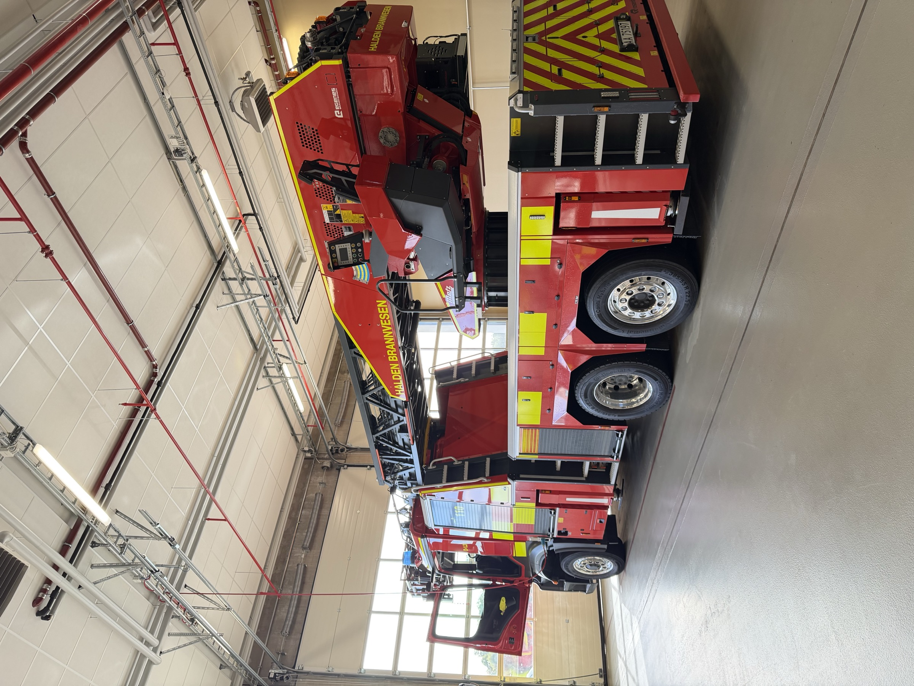
Foto kommer
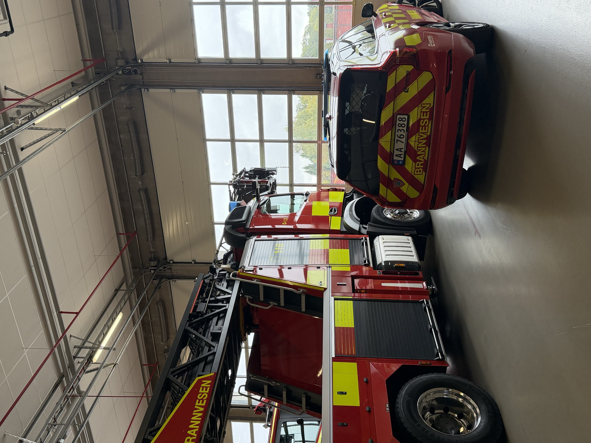
Foto kommer
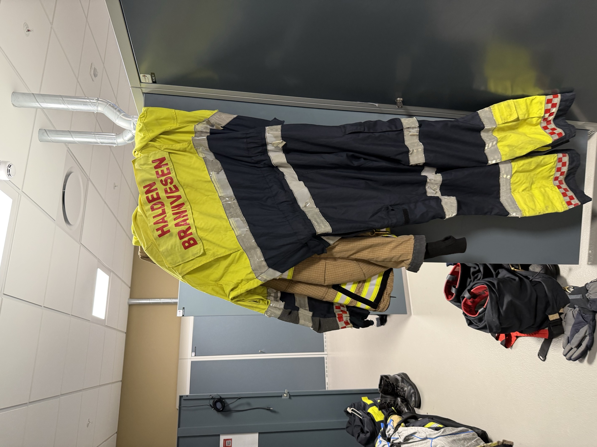
Foto kommer
Mer beredskap, mindre vaktmester
I dag er oppgavene på stasjonen mer rendyrket mot reell beredskap. De gjør ikke lenger vindusvask for eksempel. Men de henger opp julepynt i julegater og kontrollerer slokkeapparat på kommunale bygg. De får inntekt og kjennskap til bedrifter rundt omkring.
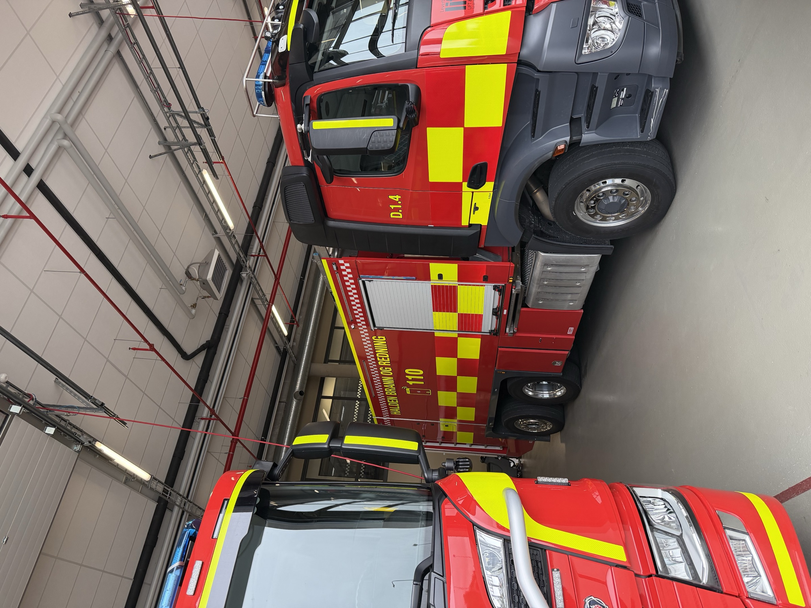
Foto kommer
Kan ikke bo for langt unna
Hvor brannmennene kan bo er regulert. De kan ikke bo mer enn tjue minutter unna stasjonen. I Jens' tid var det fem. En nylig ansatt måtte flytte fire minutter nærmere for å få jobben.
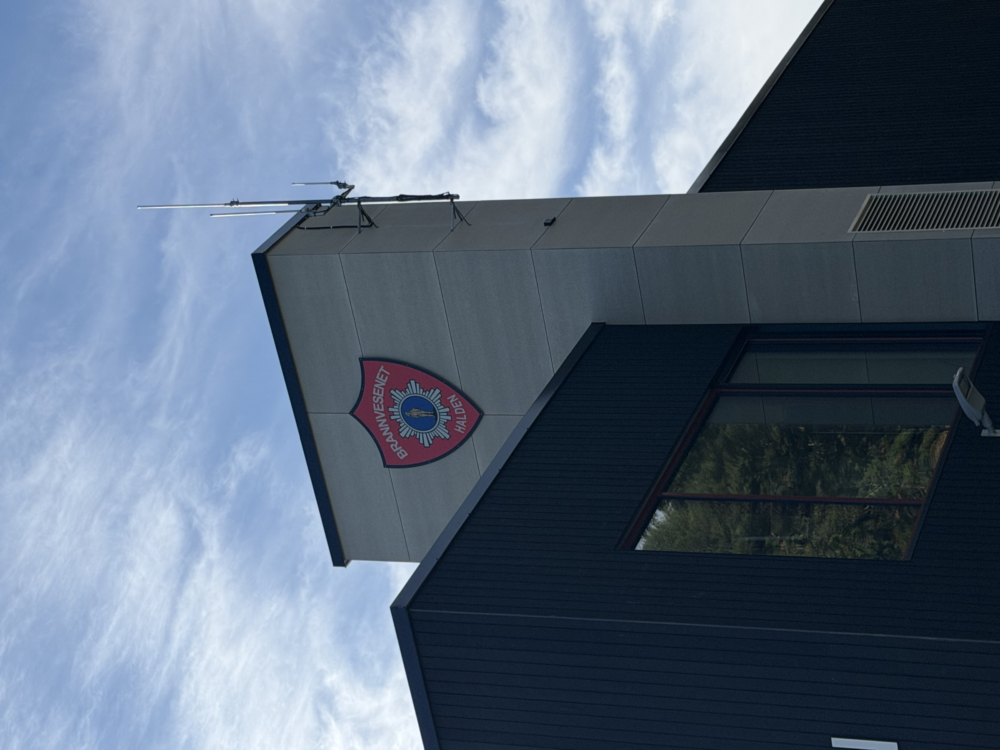
Foto kommer
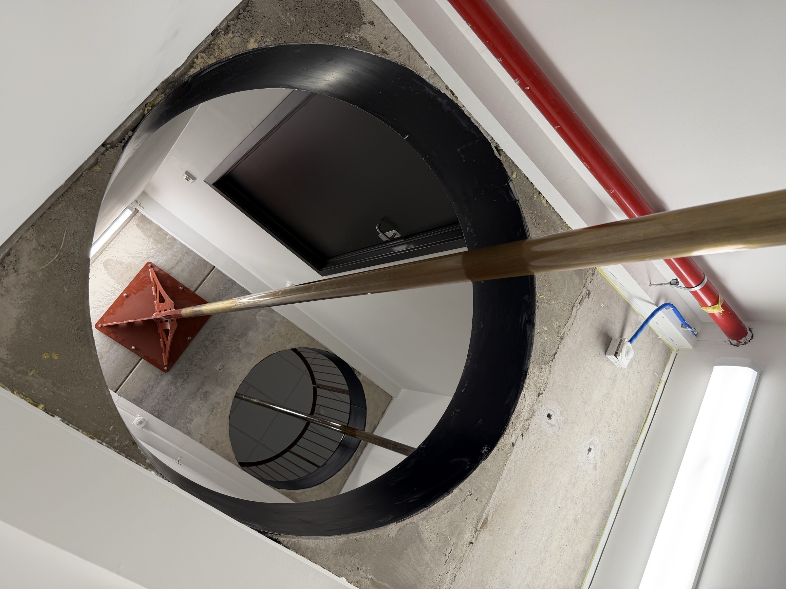
Foto kommer
Den korte reisen
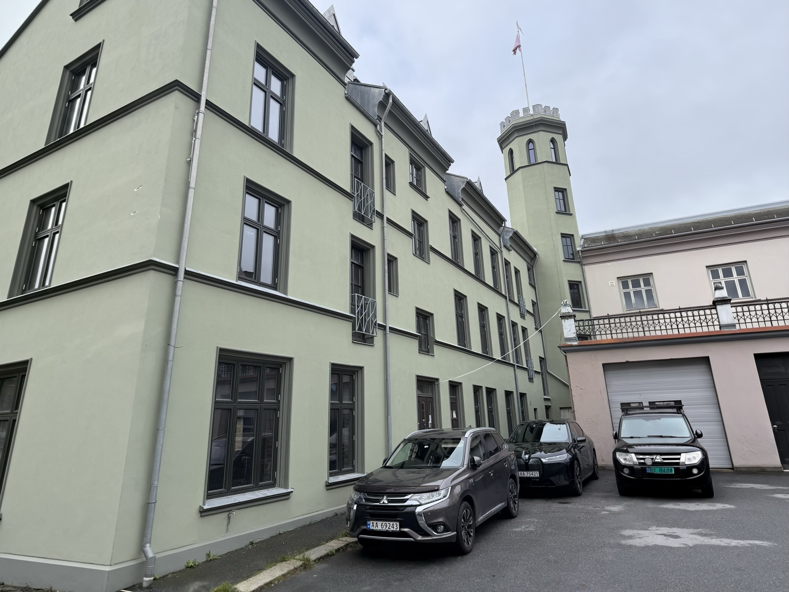
Foto kommer
Foto kommer
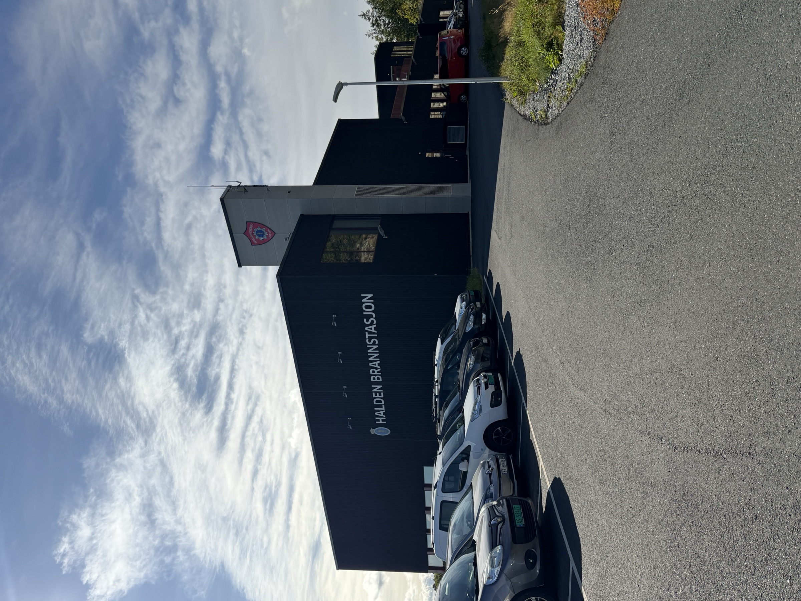
Foto kommer
Generasjoner
Skolegangen skaper endring
Brann- og redningsskolen ble en toårig utdanning for rundt to år siden. Siden da har det kommet nye brannkonstabler inn med mer teori under beltet. Siden de har mer teori fra skolen, pusher de de erfarne til å henge med.
Jens etterlyste en utdanning i mange år og er ikke i tvil. Brannmenn hadde et grunnkurs på seks uker tidligere, med lite teori om lover, regler og forebygging. I tillegg må et brannvesen med få branner øve ofte for å holde seg skarpt. Da kommer en lengre god utdanning godt med.
«De pusher oss på en veldig god måte», sier Andreas.
Læring begge veier
De erfarne har praktisk erfaring fra mange år i tjeneste. De har opparbeidet seg kunnskap gjennom arbeid innenfor yrket. Selv om de har erfaringen, er det de yngre som kommer inn med mer teoretisk kunnskap.
Nye i yrket
De unge er nysgjerrige og stiller spørsmål. «Hvorfor er det sånn? Kan du lære meg det?», sier Andreas. Han sier de lærer like mye av hverandre.
Student
Student med ansvar
Ole Jørgen studerer ved Brannskolen. Han bor i Sarpsborg og har vikarjobb i Halden. Han sier han valgte dette yrket fordi han ønsker å hjelpe de som er i sin verste livssituasjon. Han forventer mer dybde fra skolen enn det kortere kurs ga tidligere.
Han var tidligere i praksis i Moss, der kunne han ikke gå først i linja på grunn av forsikringsregler. Men i Halden får han gjort det meste de faste ansatte gjør. Gå først og kjenne på reell risiko. Ole Jørgen sier hver person får et større selvstendig ansvar i Halden.
- Moss
- Minimumsstyrke på elleve fordelt på tre stasjoner. Hjelp tar 10 minutter.
- Halden
- Minimumsstyrke på stasjonen er fem. Hjelp kan ta 20 minutter.
«Det er andre tider», sier Jens.
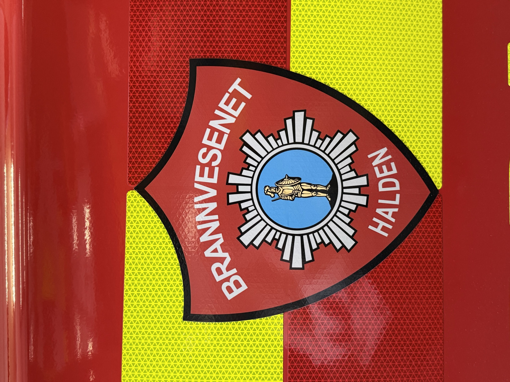
Foto kommer
Avslutning
Neste utfordring kommer fra naturen
I Halden har de fått den brannstasjonen de ønsket seg, og det er ikke lenger den som er en utfordring. Noe av det Andreas nevner som videre utfordringer er store skogbranner og strømbortfall. Store utfordringer som krever langt flere folk enn fem.
Brannen tidligere i år ved Krokstadelva viser hva et lite brannvesen ikke er i stand til å håndtere. «Det gjelder ikke bare Halden», sier han. Ole Jørgen peker på at det kan bli mindre brann og mer helse og naturskader. Da må brannkonstablene spesialisere seg.
Jens ser på stasjonen med litt avstand. «Det er andre tider», sier han. Han finner ikke noe negativt å si. Han kjenner ikke det interne godt nok til det nå. Kun det positive: bedre utdanning og bedre utstyr.
Stasjonen mellom E6 og sentrum er kanskje det som ikke var mulig å planlegge for i første omgang. Den eldre kulturen har møtt en ny og begge lærer av hverandre. Erfarne gir erfaring og unge gir spørsmål. Den forrige generasjonen ser nå på at den nye tar med stasjonen videre.